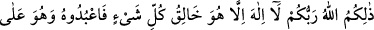

“O, her şeyi çok iyi bilendir.” Allah yaratılmış ve yaratılmamış bilinmesi imkân
dahilinde olan her şeyi bilir. Ezelî ve ebedî olarak her şeyi fazlasıyla bilir. Zat, sıfât ve
hallerden olmuş ve olacakların hiçbiri O’na gizli kalmaz. Bu cümleden kendisi hakkında
caiz olanları ve kâfirlerin Allah’ın çocuğu olduğunu sanmaları gibi muhal olan
şeylerden caiz olmayanları da bilir.
102. İşte Rabbiniz Allah O’dur. O’ndan başka tanrı yoktur. O, her şeyin
yaratıcısıdır. Öyle ise O’na kulluk edin, O her şeye vekildir (güvenilip dayanılacak
tek varlık O’dur).
Ey müşrikler! “İşte bu” o yüce sıfatlara sahip “Rabb’iniz olan” işlerinizin maliki,
tek başına ibadete lâyık olan “Allah’tır.”
Halkına ondan başka kimse sahip değildir
Helâke düşmüş kişiden başka kimse ona şeriklik davası gütmez
“O’ndan başka ilâh yoktur.” O’nun asla ortağı yoktur. “O,” olmuş ve olacak “her
şeyin yaratıcısıdır.” Bu cümle, öncekilerin tekrarı değildir. Bunlar, müteradif
haberlerdir.
“O halde O’na ibadet edin.” Çünkü bu sıfatları kendinde toplayan zat, husûsî olarak
ibadete lâyıktır. Bu hüküm, yukarıdaki ayetlerin muhtevâları dikkate alındığında
kendiliğinden ortaya çıkar.
“O, her şeye vekildir.” İşte Allah bu sıfatlarıyla sizin işlerinizi üzerine alandır.
İşlerinize O’nu vekil kılın. Dünyevî ve uhrevî sıkıntılarınızdan sizi kurtarması için
ibadetlerinizi vesile kılın. Allah, yaptığınız işleri murakabe edendir. Ona göre de size
karşılığını verrir.
İmam Gazzalî (k.s.) şöyle der: Vekil, vekil kılındığı işlerin tümünü eksiksiz ve
kusursuz yerine getirebilen ve getirmeyen olmak üzere ikiye ayrılır. Vekil kılındığı işleri
eksiksiz yapan, onları yerine getirmeye muktedir olan vekil-i mutlak sadece Allah’dır.
İşte buradan insanın “el-Vekîl” isminin mânâsını ne kadar taşıyabileceğini anla.
Şeyh Ebû Hamza Horasânî (rh.a.)’ın şöyle dediği nakledilmiştir: Bir yıl hacca
gidiyordum. Yolda bir kuyuya düştüm. Yardım istemem için nefsimle mücadele ettim.
Kendi kendime: “Allah’a yemin olsun ki kimseden yardım istemeyeceğim.” dedim.
Daha bu düşünce kafamdan gitmeden kuyunun başına iki adam geldi.
Biri diğerine: “Gel şu kuyunun ağzını kapayalım da içine kimse düşmesin.” dedi.
Kamış ve çerçöp getirip kuyunun ağzını kapadılar. Bağırıp yardım isteyeyim diye